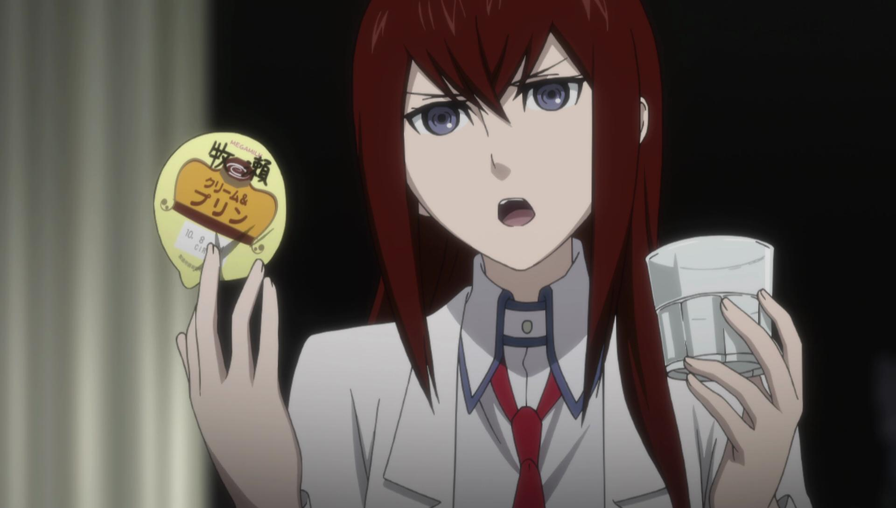
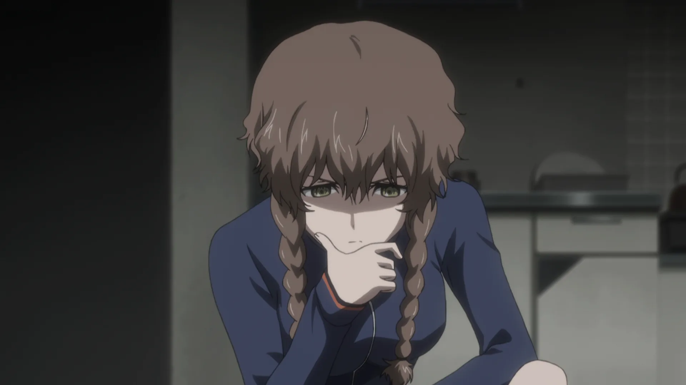

У каждого члена лаборатории есть свой номер и кодовое имя:
- Безумный учёный
- Маюши
- Супер-Хака
- Ассистентка
- Сверкающий палец
- Рукако
- Фейрис НянНян
- Воин на полставки
Окабе Ринтаро

Истинное имя Хооин Кёма. Основатель лаборатории, гениальный изобретатель и безумный ученый. Его главная цель — подрыв деятельности Организации, таинственной структуры, о зловещих планах которой не подозревает никто, кроме него.
Шиина Маюри
Со-основатель лаборатории, подруга детства Ринтаро. От науки далека, но полезна, так как заботится об остальных сотрудниках. Работает официанткой в мэйд-кафе, а в свободное время шьет костюмы для косплея.
Хашида Итару

Технический специалист, Супер-Хака, который смог взломать системы СЕРНа и разузнать его тайны . Его слабостью являются 2D и 3D девушки, а также пошлые шутки.
Макисе Курису
Гениальный нейро-ученый, которая в свои 17 уже закончила университет и опубликовала свою статью в журнале Sciency. Учится в США.
Кирю Моэка

Завербованный член СЕРНа. Предпочитает общаться, отправляя сообщения со своего телефона, даже если собеседник находится перед ней.
Урашибара Руко
Ученик Хооина, обладатель Священного Клинка Самидаре. Женственной внешности, но он парень!
Акиха Румихо

Работает в мэйд-кафе с Маюри. Дару без ума от нее. Как и Руко, стала членом лаборатории, чтобы отправить ди-мейл.
Амане Сузуха
Работает в магазине электроники под помещением лаборатории, и часто подслушивает, о чем говорят Ринтаро и его коллеги. Прибыла из будущего и искала своего отца. Когда поиски успехом не увенчались, стала членом лаборатории по приглашению Ринтаро, который хотел ее поддержать. Недолюбливает Курису из-за того, что произойдет в будущем.
Хотите стать сотрудником? Тогда заполните форму. Также пройдите опрос, чтобы мы лучше вас узнали.